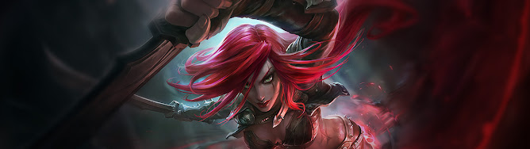

Nacida en una de las familias nobles más respetadas de Noxus, Katarina Du Couteau supo que era
superior a los demás desde muy temprana edad. Mientras que su hermana menor, Cassiopeia, siguió la
senda política de su madre, Katarina era el ojo derecho de su padre, el astuto general Du Couteau.
Este la incitó a dominar el arte de las cuchillas y a acabar con los enemigos del imperio no con
brutalidad e imprudencia, sino con una precisión mortal. Era un maestro inflexible, con numerosos
alumnos y notoriamente difícil de impresionar.
Así fue la infancia de Katarina (si es que puede llamarse así): sin cabida para el afecto o el
descanso. Cada día un paso más cerca de convertirse en el arma definitiva; poniendo constantemente a
prueba su resistencia, su destreza, su tolerancia al dolor. Robaba venenos de los boticarios menos
respetables de la ciudad para probar su eficacia, desarrollando su propia resistencia con pequeñas
dosis a la vez que catalogaba sus efectos. Escalaba las torres más altas en la oscuridad de la
noche, refugiada en las sombras.
Anhelaba servir a Noxus. Soñaba con la oportunidad de demostrar su fuerza oculta al servicio del
imperio y del trono.
Fue su padre quien señaló su primer objetivo, que acampaba con sus guerreros en vísperas de una de
las innumerables invasiones militares hacia el oeste. Debía asesinar a un oficial del ejército
enemigo, un desgraciado de baja cuna llamado Demetrius.
Katarina estaba furiosa. No había entrenado toda su vida para desperdiciar su pericia en un inútil
apenas capaz de blandir una espada. La misión no estaba a su altura. En lugar de acechar al objetivo
asignado, Katarina se infiltró en el campamento enemigo y le abrió la garganta a su comandante
mientras dormía. Fue una ejecución impecable. Con ella, vendría una victoria rápida y gloriosa para
Noxus. El orgullo de su padre.
Al amanecer, con el rostro cubierto de cenizas, el héroe Demetrius lideró un ataque hacia el
campamento de su padre, guiado por la sed de venganza. Docenas de soldados noxianos fueron
masacrados; entre ellos, la comitiva personal del general. El propio padre de Katarina apenas logró
escapar con vida.
Estaba tan furioso que hasta se negaba a mirar a su hija a los ojos. Ella lo había avergonzado, a él
y a su apellido. Los mejores asesinos no buscan reconocimiento ni gloria, le recordó él. No esperan
convertirse en los predilectos, en la mano derecha de sus maestros.
Abrumada y sola, Katarina emprendió la marcha. Iba a completar su misión original. Demetrius pagaría
con su vida. A pesar de su determinación, tenía la mente en otro sitio. ¿Podría algún día perdonarse
a sí misma? ¿Cómo había sido tan tonta?
Estaba tan distraída que no vio a su atacante hasta que estuvo a punto de sacarle un ojo.
Tras el fracaso de Katarina, el general Du Couteau había enviado a otro de sus protegidos tras ella;
un chaval sin nombre de uno de los gremios de asesinos inferiores. Pero incluso con sangre corriendo
por su rostro, los años de riguroso entrenamiento mostraban sus frutos, y empuñó sus cuchillas en un
abrir y cerrar de ojos.
Seis horas después, arrojó la cabeza degollada de Demetrius a los pies de su padre.
Le dijo al general que había considerado cortarle la cabeza a él en su lugar, pero finalmente había
decidido (por mucho que odiara admitirlo) que había hecho lo correcto al ordenar matarla. Ella había
fracasado. No solo como asesina o como hija, sino como noxiana.
Y el fracaso debe tener consecuencias. Recorrió con los dedos la herida profunda que le cubría el
ojo izquierdo y pensó en el precio que otros habían pagado por su arrogancia.
Sabía que había perdido el favor de su padre y nunca podría recuperarlo. La reemplazaría con
cualquiera solo para herirla. Aun así, juró redimirse a cualquier precio, volver a dedicar su
talento al imperio y convertirse en el arma siniestra que siempre quiso ser.